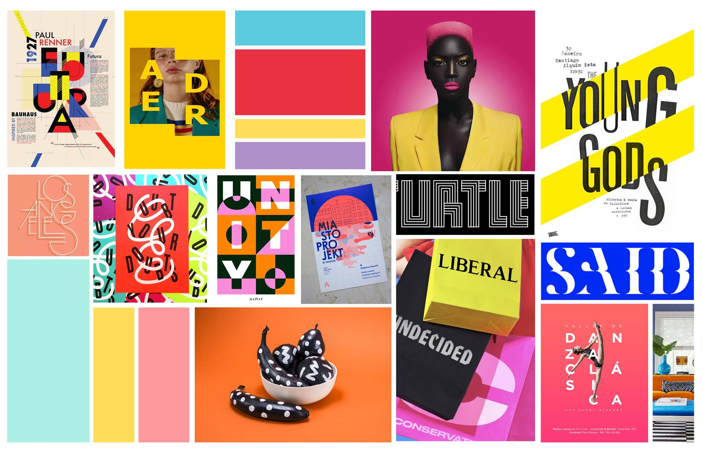

caroline song :-)
communications designer @ carnegie mellon
Spring 2020, 16 weeks
Leta Sobierajski’s work immediately drew my attention due to her strong use of bold colors and the contrast she utilized within each one of her design pieces. She is a multi-media designer, practicing sculpture, photography, graphic/web design, etc. While only being in practice for a short while, she has already made a huge impact in the design world.
Using various platforms, from print to interactive web, I was able to create a multimedia series of work that would educate viewers on Leta and her bold, quirky aesthetic.
Click to skip to the poster →
Click to skip to the publication →
Click to skip to the mobile experience →
Click to skip to the
animation →
Click to skip to the interactive website →
Print Design
Interaction Design
Motion Graphics
Prototyping
Adobe XD
Adobe InDesign
Adobe Illustrator
Adobe AfterEffects
HTML/CSS
Individual
01 Poster –
Inspired by Leta’s Google Pixel 2 Wallpapers, I designed a poster that is meant to briefly introduce Leta and her designs to the audience.
01 Poster Process –
I began by conducting informational research about Leta Sobierajski's life + work. I put together a moodboard and kit of parts to formulate an overall color, type, and style that would stay consistent through my entire body of work.
02 Publication –
Taking note of Leta’s unapologetic use of color and type, I was able to craft together text, images, and typography to create a 16-spread booklet for a reader who is being introduced to Leta’s work for the first time.


02 Publication Iterations –
To draw from Leta’s style, I focused on integrating blocks of color in this booklet. I wanted to keep the geometric layout that she normally implements in her designs, yet still create moments where that geometry is able to break apart and draw the eye. Starting with flat plans sketches and bringing them to life on InDesign, I chose to tell her narrative through a natural timeline of her life.
Flat Plan Sketches
I had to take into account the affordance that the publication format gave me in terms of how much information and imagery can be utlilized, and how that opposes a poster format, where there would be much less content. The audience's viewtime is much greater for a publication than it would be for a single poster.
Iterations and Notes
03 Mobile Experience –
Made to go in tandem with my booklet, this mobile experience is designed to walk the user through generally the same information found in the booklet, but presented in an interactive form to take advantage of the affordances that a mobile format brings to the table as opposed to print.

03 Mobile Wireframing –
I started with some low-fidelity wireframes sketches to focus on the basic structure of my design. Then as I translated them into Adobe XD, I began building the interactions, keeping them simple in order to reflect the straightforward nature of Leta's work. I explored with different shapes and chose to rely on the color scheme and imagery movement to keep users engaged.
04 Animation –
This 80 second animation explores the highly collaborative life of Leta, delving into her relationship with both her husband and design partner, Wade Jeffree. I played with simple shapes and colors to create engaging movements that pay homage to Leta’s eclectic style.
05 Interactive Website –
Using HTML/CSS, I created an interactive, multipage, and responsive website. This website serves as an easy resource for people to learn more about Leta and her work.
Click to view the live website →
05 Website Wireframing –
I began with a site map in order to understand the core levels of hierarchy and structure that I wanted to build. Then, I moved onto low-fidelity wireframes to design the basic layout of my website.
From there, I designed my high-fidelity wireframes. I mapped out not only the web layout, but the mobile and tablet layout as well, to keep in mind the change in structure when responsive.
Final Thoughts –
I truly enjoyed the process of creating each piece of this project. I have been able to develop an even greater appreciation and eye for color through this work, and a realization of the strength that simple color combinations can bring to a design. The confidence and presence that Leta brings to each of her designs is one of the most admirable things I find about her, and working on this homage project has inspired me to strive for the same in my own designs.
I have also been able to truly understand the different affordances each type of media brings to the table, from print to web/mobile to animation. This project has allowed me to develop my own process in approaching each different kind of media, and realize the similarities and differences in user expectations for each platform.